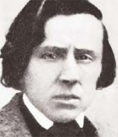

Il n'est pas difficile de trouver des études bien documentées sur l'état de la musique moderne polonaise, y compris ses évolutions les plus récentes.
Hélas, la question n'est pas nouvelle : à quoi sert-il de tant écrire sur des musiques que personne ne connaît si aucune solution n'est trouvée pour proposer des extraits sonores significatifs ? Le problème est particulièrement frustrant en ce qui concerne la Pologne : ce pays a développé, surtout depuis un siècle, un art musical d'une qualité et d'une variété exceptionnelles mais à quelques exceptions notoires près, dont les plus célèbres sont Penderecki et Gorecki, il est aussi difficile de se procurer un enregistrement de musique polonaise récente que d'orthographier correctement le nom de leurs auteurs.
Avant 1800
La situation de la musique ancienne polonaise n'est guère différente : elle est difficile d'accès et c'est d'autant plus rageant qu'elle ne manque décidément pas d'intérêt. Au Moyen-âge, alors que les pays scandinaves ne sont nulle part, la Pologne, bastion avancé de la chrétienté romaine, développe un art musical proche de ce qui se fait en France et en Flandres, preuve que des contacts culturels existaient. Des manuscrits, datés du 13ème siècle et retrouvés dans la ville historique de Stary Sącz, font état d'une similitude de style avec celui de l'Ecole de Notre-Dame de Paris.
On écrit également ponctuellement de très belles choses, en Pologne, à la Renaissance : écoutez les motets (plage 9 !) de Piotrz Grudziądza (1400?-1480?) ou les œuvres religieuses de Nikolaus von Radiomia (15ème siècle), écrites dans un style qui rappelle Guillaume Dufay. Je vous ai aussi déniché un superbe CD de musique au château de Wawel, contenant des œuvres de Mikolaj Gomólka (1535-1591), le tout interprété par le talentueux ensemble, Ars Nova (Rien à voir avec l'ensemble éponyme danois) ou cet autre CD sur fond de fanfares.
A partir du 16ème siècle, les compositeurs se fondent de plus en plus dans une masse anonyme dont personne n'émerge véritablement, contrairement à ce qui se passe en pays franco-flamand à la même époque. Les cours princières ont pratiqué l'importation de musiciens étrangers, principalement italiens, Luca Marenzio (1553-1599), Giovanni Francesco Anerio (1567-1630) et Marco Scacchi (1602-1685), ce qui n'a jamais été immédiatement profitable à la création nationale.
J'ai quand même noté quelques noms, non que j'assure qu'ils soient les meilleurs mais simplement parce que je peux proposer quelques extraits sonores (Ceci implique peut-être cela) :
Grzegorz Gerwazy Gorczycki (1668-1734) : Œuvres pour chœur et orchestre.
La Pologne a progressivement perdu son identité culturelle à mesure que les invasions - suédoises, russes, turques et prussiennes - se sont succédées sur son territoire. Il en est résulté une banalisation de la musique écrite aux périodes baroque et classique qui ne fait guère plus que reproduire, plus ou moins adroitement, des clichés importés.
Entre 1800 et 1900
Il faudra attendre le 19ème siècle pour retrouver un courant authentiquement polonais même s'il demeure à l'écoute de ce qui se fait ailleurs sur le continent. Je n'ai, dans un premier temps, aucun génie à vous proposer, rien que de bons artisans :
Jozef Elsner (1769-1854) dont la Symphonie, opus 11, est agréable certes mais franchement timide à côté des monuments beethoveniens en train de voir le jour.
Karol Lipinski (1790-1861), le Paganini polonais, se situe une marche de podium au-dessus, grâce à ses brillants Concertos pour violon. Une belle découverte.
Józef Brzowski (1805-1888), fut davantage qu'un pédagogue renommé, comme en témoigne sa Symphonie dramatique. Il rendit de fréquentes visites à Chopin lors de son séjour en France.
Ignacy Feliks Dobrzyński (1807-1867) est un autre musicien de qualité, sachant déployer une belle veine mélodique comme dans ce sextuor à cordes (plages 1 à 4). Sur le même CD, un quintette d'Elsner procure un complément bienvenu (plages 5 à 8). L'influence du jeune Beethoven est perceptible dans ce Concerto, pour piano, opus2.

Frédéric Chopin
Le grand musicien polonais de ce temps est évidemment Frédéric Chopin (1810-1849), que ses compatriotes renomment volontiers Fryderyk Franciszek Szopen.
Les Français, toujours prompts à annexer sous leur bannière les célébrités qui ont mis un pied dans l'hexagone à un moment quelconque de leur existence, n'ont curieusement jamais tenté de faire passer Chopin pour un musicien français. Pour cette fois, ils y auraient pourtant eu quelques droits : non seulement Fryderyk était le fils d'un émigré lorrain, Nicolas Chopin, mais de plus, il fit, dès la fin de ses études, le choix de vivre en France, un pays que - sauf villégiatures en compagnie de George Sand - il ne quittera plus.
L'explication est que la musique de Chopin est fondamentalement et idiomatiquement polonaise, cultivant des rythmes typiques : polonaise, mazurka, krakowiak, etc. On le dit père de la grande tradition pianistique romantique, un label que lui vaudraient, à elles seules, ses extraordinaires Etudes opus 10, remarquablement interprétées ici par Maurizio Pollini. Il n'a pratiquement rien écrit de significatif pour d'autres instruments : même ses concertos limitent le rôle de l'orchestre à un accompagnement minimal. La fluidité inimitable du piano de Chopin n'a jamais cessé de séduire le public et les interprètes, à tel point que certains pianistes, tel le grand Arthur Rubinstein, lui ont consacré une part non négligeable de leur carrière.
La réputation parisienne de Chopin a suscité des vocations au pays natal. Le plus apprécié est sans doute Stanislaw Moniuszko (1819-1872), un musicien doué d'une imagination mélodique remarquable. Il a essentiellement mis ses talents au service de la voix comme dans ses deux opéras, Halka et le Manoir Hanté. Ses mélodies valent également le détour.
Les générations suivantes ont vu naître quelques beaux talents de musiciens, secondaires certes mais intéressants (Vous observerez au passage la nécessité d'inverser la valeur des lettres dans la version polonaise du jeu de Scrabble) :
Theodor Leschetizky (1830-1915) : Concerto pour piano opus 9.
Notez le rôle prépondérant joué par le piano, ré(f)(v)érence à Chopin oblige.
Je suis moins enthousiaste en ce qui concerne Mieczyslaw Karlowicz (1876-1909) qui bénéficie pourtant de l'enregistrement progressif de son œuvre chez Naxos, en particulier de ses Poèmes symphoniques.
1900-2000 : L'âge d'or
Le 20ème siècle a vu naître un art d'une diversité étonnante, c'est assurément l'âge d'or de la musique polonaise.
Karol Szymanowski
Karol Szymanowski (1882-1937) est le musicien qui a révélé la modernité occidentale à une Pologne toujours sous l'emprise du romantisme de Chopin, qu'il appréciait. Vous brillerez immanquablement dans les salons si vous y affirmez que vous connaissez cette musique, discrètement empreinte d'un exotisme fin de siècle. Reportez-vous au site jpc et régalez-vous, par exemple, de sa 4ème Symphonie. Un grand maître beaucoup trop négligé !
Ludomir Rozycki (1883-1953) (Concerto pour violon), Heinrich Kaminski (1886-1946) (Oeuvre chorale), Karol Rathaus (1885-1954) (Sonate n°1), Tadeusz Szeligowski (1896-1963) (Concerto pour orchestre) et Jozef Koffler (1896-1943) (Pièces pour piano), ne sont guère aussi importants.
Boleslaw Szabelski (1896-1979) est un cas singulier un Pologne. Il a commencé sa carrière en développant, sans honte, un style néo-baroque de qualité puis a viré de bord à la fin des années 1950, se consacrant corps et âme à la musique sérielle, au point d'inspirer les fondateurs de l'école de Varsovie. Ses compatriotes, Gorecki et Penderecki, suivront la trajectoire exactement inverse 30 ans plus tard. Voici Szabelski à l'œuvre dans ces styles opposés : le Concerto grosso de 1954 puis Aphorismes de 1962.
Alexandre Tansman (1897-1986) est un autre immigré polonais en France. Bien qu'il ait toujours manifesté son attachement à son pays d'adoption, il se considérait comme fondamentalement polonais. De tempérament néo-classique, sa 5ème symphonie ne révolutionne certes pas l'histoire de la musique mais elle ne manque pas de charme. Encore un musicien à (re)découvrir !
Grazyna Bacewicz
L'entre-deux guerres a révélé Grazyna Bacewicz (1909-1969), qui reste sans doute, à ce jour, la plus grande compositrice de tous les temps, ce qui n'est quand même pas rien. Partie d'un style néo-classique, elle s'en est progressivement écartée mais sans heurts, privilégiant en permanence la "lisibilité" de son oeuvre. Comparez, par exemple, la différence des styles entre le Concerto pour Cordes de 1948 et le Divertimento de 1965. Elle annonce également la future école de Varsovie par la rigueur qu'elle met en toute composition. Seule sa musique de chambre est facilement accessible en CD. Essayez ses 7 fascinants quatuors à cordes et accrochez-vous : cette dame a réellement quelque chose de différent à dire. Le 4ème a remporté le premier prix au concours de quatuors de Liège en 1951. Toujours au rayon musique de chambre, procurez-vous ce brillant enregistrement des deux quintettes à clavier et de la sonate n°2 pour piano, vous en aurez pour votre argent. Sauf la 3ème, enregistrée chez Koch, les 4 symphonies sont difficiles d'accès (Voici quand même la n°4). La situation des 7 concertos pour violon est plus enviable : à l'exception étrange du n°6, ils ont été enregistrés chez Chandos par sa compatriote Joanna Kurkowicz qui lui avait déjà consacré un CD antérieurement. Pourquoi faut-il attendre que certains artistes aient 100 ans pour qu'on se décide à les honorer ? Signalons que le 7ème Concerto a remporté la Médaille d'or au Concours de composition Reine Elisabeth de Belgique en 1965.
Les membres fondateurs de l'école de Varsovie sont Kazimierz Serocki (1922-1981), l'initiateur de la "topophonie" ou musique spatiale, et Tadeusz Baird (1928-1981) le plus lyrique (au sens bergien du terme) des compositeurs sériels polonais. Ensemble, ils ont mis sur pied l'imprononçable, Warszawska Jesien (Automne de Varsovie), un festival consacré à la musique contemporaine. Pensé, à la mort de Staline qui jamais ne l'aurait toléré de son vivant, comme une fenêtre sur l'avant-garde pratiquée à l'Ouest, il s'est progressivement ouvert à toutes les formes de création. C'est un beau modèle de tolérance musicale dont le festival Bruxellois Ars Musica ferait bien de s'inspirer (Et toc, je l'ai dit). Outre la méthode sérielle, ce festival a promu une spécialité polonaise baptisée "sonorisme". Il s'agit du culte de la projection du son sans référence à une mélodie ou un rythme particulier. L'œuvre emblématique du courant sonoriste est sans doute le "Thrène à la mémoire des victimes d'Hiroshima" de Penderecki dont nous reparlerons.
Witold Lutoslawski
Witold Lutoslawski (1913-1994) aura été l'un des derniers survivants des "Classiques du 20ème siècle", au sens que cette expression revêt dans la lignée des Bartok, Stravinsky, Schostakovitch, Britten et autre Messiaen. Très inventif, il a toujours pris soin de fuir l'avant-garde radicale. Son œuvre ayant été abondamment enregistrée, vous n'avez que l'embarras du choix, par exemple Préludes & Fugues, Livre pour orchestre ou Symphonie n°4. Vous brillerez en société en louant sa musique autant que celle de Szymanowski.
Andrzej Panufnik (1914-1991) a puisé son inspiration dans les modes anciens. Ses 10 symphonies distillent des parfums sacraux, émotionnels voire romantiques (Concerto pour violon & cordes). Les références sonores ne manquent pas non plus sur jpc. Sa fille Roxanna Panufnik (1968- ) fait une carrière remarquée dans la profession (Dance of Life).
Mieczyslaw Weinberg (1919-1996) est bel et bien d'origine polonaise : il est né en Pologne où il a fait ses études mais il est vrai qu'il a émigré, en 1939, en Russie qui ne l'a plus lâché. Voilà pourquoi Weinberg est aussi considéré comme un des plus grands compositeurs russes du 20ème siècle. Vu que personne ne semble protester, je me rangerai à l'avis général et n'en reparlerai qu'à l'occasion d'un prochain voyage imaginaire en Russie. Ce n'est que dans un souci d'anticipation que je soumets à votre attention ses deux belles Sonates pour violoncelle solo et son Concerto pour Violon opus 67. Attention, son nom est parfois orthographié Vainberg.
Augustyn Bloch (1929- ) : vous aimerez peut-être Empor pour orchestre ou ces œuvres pour violoncelle de ce compositeur par ailleurs peu connu.
Wojciech Kilar (1932-2013). Après des débuts sériels tapageurs, il revenu, vers les années 1975, à un style néo-tonal (Krzesany). Les cinéphiles le connaissent également comme l'auteur de musiques de films (La neuvième Porte ou Le pianiste de Roman Polanski).
Krzysztof Penderecki
Krzysztof Penderecki (1933- ) a fait sensation dans les années 1960 comme un représentant pur et dur du mouvement sonoriste. Son "Thrène à la mémoire des victimes d'Hiroshima" (1960) est l'œuvre emblématique de cette période créatrice. Tout y passe : les instruments à cordes y sont traités en modes glissandi ou percussifs qui explosent en savants clusters sonores. Au grand dam des experts qui voyaient en lui un des leaders de la modernité, il a progressivement retourné sa veste, revenant à un langage de plus en plus lyrique. Sa Passion selon Saint Luc (1965) marque cette transition. Il est actuellement en passe de réussir son pari : ses œuvres récentes, Seven Gates of Jerusalem, Polish Requiem, 8ème Symphonie, font état d'une qualité d'inspiration qui le pose, à l'abri des modes, comme un des leaders de la musique actuelle. Vous trouverez, sur ce site, davantage de détails concernant ce musicien essentiel.
Henryk Mikolaj Górecki (1933-2010) a connu un parcours similaire. Lui aussi forçait l'admiration de ses pairs lorsqu'il alimentait l'Automne de Varsovie avec des œuvres d'un modernisme intransigeant. Il a également fait volte-face, adaptant les techniques minimalistes à sa conception de la spiritualité. L'histoire de sa Symphonie n°3 est plutôt singulière. Cette œuvre culte du postmodernisme a, contre toute attente, fait le tour du monde en quelques mois à peine (un million de CD vendus rien que dans les pays anglo-saxons !). Elle avait pourtant connu des débuts confidentiels lors de la dernière session en date du Festival de Royan, en 1977. Complètement à contre-courant de ce qui se jouait dans ce sanctuaire de l'avant-garde (Stockhausen, Mefano, Amy, etc.), elle a marqué le retour de son auteur à la modalité, sans curieusement créer de mouvement d'hostilité, ni d'ailleurs d'enthousiasme : elle est tout simplement tombée dans une indifférence provisoire. Sa récupération comme bande son du générique du film "Police" de Maurice Pialat et son enregistrement sous le label Olympia n'ont pas changé la donne et il a fallu attendre l'enregistrement de David Zinman, avec la soprano Dawn Upshaw, pour que l'œuvre atteigne une dimension planétaire. Du coup, ceux-là mêmes qui s'étaient tus à Royan se sont réveillés, tel Pierre Boulez qui, avec sa délicatesse habituelle, taxa l'œuvre de nullité absolue (je n'oserais répéter les termes utilisés) dans une interview au BBC Music Magazine. L'œuvre de Gorecki ne se limite évidemment pas à ce tube : Miserere, Requiem für eines Polka (plages 1 à 4), Concerto pour clavecin, …, ne peuvent manquer de charmer l'auditeur réceptif.
Zygmunt Krauze (1938- ) est un compositeur fort attachant que l'on a très peu l'occasion d'entendre à l'Ouest. Voici un mouvement de son Concerto n°2, pour piano, et un CD pour piano solo, miraculeusement parvenu jusqu'à nous. D'autres enregistrements sont proposés sur le site - polonais ! - du compositeur.
Krzysztof Meyer (1943- ) est très à l'aise dans ces remarquables 24 Préludes pour le piano. Ecoutez aussi ces beaux Trios ainsi que la série des quatuors à cordes (n°6). A ne pas manquer !
Il est délicat d'évoquer la musique polonaise la plus contemporaine. On dit le plus grand bien de Pawel Szymański (1954- ), le plus doué paraît-il, de la génération d'après 40-45 (Concerto pour piano). On cite encore Aleksander Lason (1951- ) (Symphonies n°1, n°2, n°3, n°4), Eugeniusz Knapik (1951- ), Krzesimir Dębski (1953- ) (excellent Concerto pour 3 (!) clarinettes), Tadeusz Wielecki (1954- ), Hanna Kulenty (1961- ) (Nombreux concertos, n°3, pour trompette), Pawel Lukaszewski (1968- ), très impliqué dans la musique sacrée (Missa de Maria a Magdala) ou Pawel Mykietyn (1971- ) (Passion selon St Marc) mais cette énumération manque encore de liens sonores probants.
J'ai quand même dégoté deux extraits microscopiques qui feront l'affaire en cette période de disette : depuis cette année, la Radio polonaise décerne un prix pour la meilleure composition de l'année écoulée. Voici les extraits trouvés de trois œuvres nominées en 2008 :
Zbigniew Bargielski : Nocturne in blue and red .
Aleksander Lason : Kwartet .
Pawel Mykietyn : Symphony n°2 .
And the winner was … Pawel Mykietyn, pas étonnant, écoutez encore 3 for 13 (insistez svp !) ou le début de sa Passion selon St Marc !
Cela dit, si vous voulez vraiment mesurer toute la vitalité de la musique polonaise, il ne vous reste plus qu'à passer systématiquement les dernières semaines de septembre à l'Automne de Varsovie ou à suivre l'actualité de ce site culturel.
Mentionnons enfin deux enregistrements disponibles, d'un genre à part :
un curieux CD publié par DUX, hommage collectif de jeunes musiciens polonais à Chopin,
des Variations sur un thème de Mozart de Stanislaw Krupowicz (1952- ) où les possibilités musicales de l'ordinateur sont exploitées de façon plutôt ingénieuse (plage 3).
La Pologne n'a pas été avare en interprètes de renommée internationale.
Bien que son nom ne le désigne guère comme polonais, le violoniste George Bridgetower, un mulâtre en fait, est passé à la postérité pour avoir reçu la dédicace de la 9ème Sonate pour piano et violon de Beethoven, œuvre qu'il a d'ailleurs créée avec le compositeur au piano. Si l'oeuvre porte aujourd'hui le surnom de "Sonate à Kreutzer", c'est parce que le Maître s'est disputé avec Bridgetower, redédicaçant l'œuvre au violoniste français Rodolphe Kreutzer qui ne la joua jamais, la trouvant trop difficile !
Les noms d'Henryk Wieniawski (1835-1880) et de Leopold Godowsky (1870-1938) ou d'Ignacy Jan Paderewski (1864-1941) sont célèbres pour leurs prouesses violonistique et pianistique. Ils ont chacun composé des concertos pour leur instrument et quelques enregistrements sont disponibles. Essayez, en particulier ce beau double CD de pages de Godowsky. Paradewski s'est également essayé à la symphonie (par exemple la deuxième, Polonia) mais sans grand succès.
Wanda Landowska (1879-1959) (ici dans les Variations Goldberg de Bach; plages 6 et suivantes) fut une pionnière dans la réhabilitation du clavecin au service des œuvres anciennes. 60 ans plus tard, Elisabeth Chojnacka (1939- ) restituera le clavecin à la musique moderne, un pari qui n'avait rien d'évident mais qu'elle a tenu grâce à des commandes honorées de compositeurs en vue, György Ligeti, Iannis Xenakis, Zygmunt Krauze, Michael Nyman et Henryk Górecki (Concerto pour clavecin, 1er & 2ème mouvements) .
Henryk Szeryng fut un violoniste apprécié, de la génération des Oïstrakh, Stern, Menuhin, Grumiaux, Francescatti, etc.
Les chefs d'orchestre polonais renommés sont nombreux, à commencer par le génial Leopold Stokowski (1882-1977), de son vrai nom Antoni Stanislaw Boleslawowicz. Ce musicien, un brin fantasque, n'hésitait pas à "retoucher" les partitions pour mettre en valeur des détails d'orchestration de son invention. Il est, en particulier, l'auteur de transcriptions pour grand orchestre, devenues célèbres, d'œuvres pour orgues de Bach. Détail moins connu, il est, comme Maurice Ravel, l'auteur d'une orchestration plutôt bien faite des "Tableaux d'une Exposition" d'après Moussorgski.
On citera encore les chefs, Paul Kletzki, Artur Rodziński, Witold Rowicki, Jerzy Semkow, Stanislaw Skrowaczewski, Antoni Wit, etc.
Krystian Zimerman et Piotr Anderszewski sont des stars internationales du piano et la sœur de Piotr, Dorota Anderszewska, est violon solo à l'orchestre national de Montpellier.
Le label Olympia fut un pionnier dans la diffusion de la musique polonaise; malheureusement les avatars de la mondialisation ne rendent pas ses disques plus accessibles pour autant. L'autre label se consacrant largement à la musique polonaise est DUX. Vous pouvez vous faire une idée du catalogue disponible en Occident en vous reportant ici.
Note ajoutée. La célébration du 25ème anniversaire des élections libres de 1989, en Pologne, a été l'occasion d'une initiative culturelle de premier plan émanant de l'Institut national de l'audiovisuel et consistant en la numérisation et la publication d'archives sonores en provenance (essentiellement) de la Radio polonaise. Le site ninateka.pl propose un inventaire exceptionnel d'oeuvres de Witold Lutosławski, Henryk Mikołaj Górecki, Krzysztof Penderecki, Andrzej Panufnik et Wojciech Kilar, un MUST absolu !